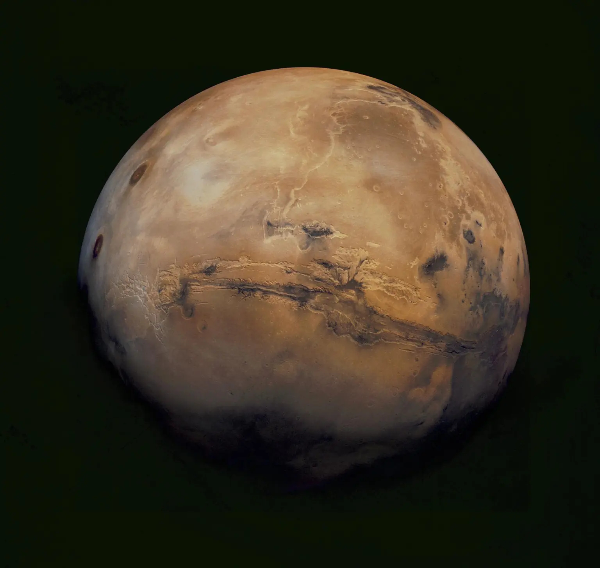
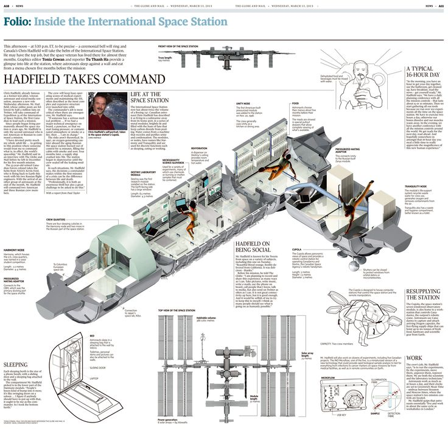
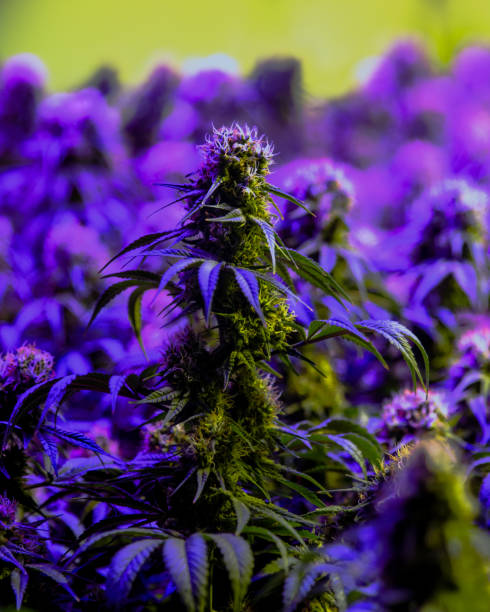
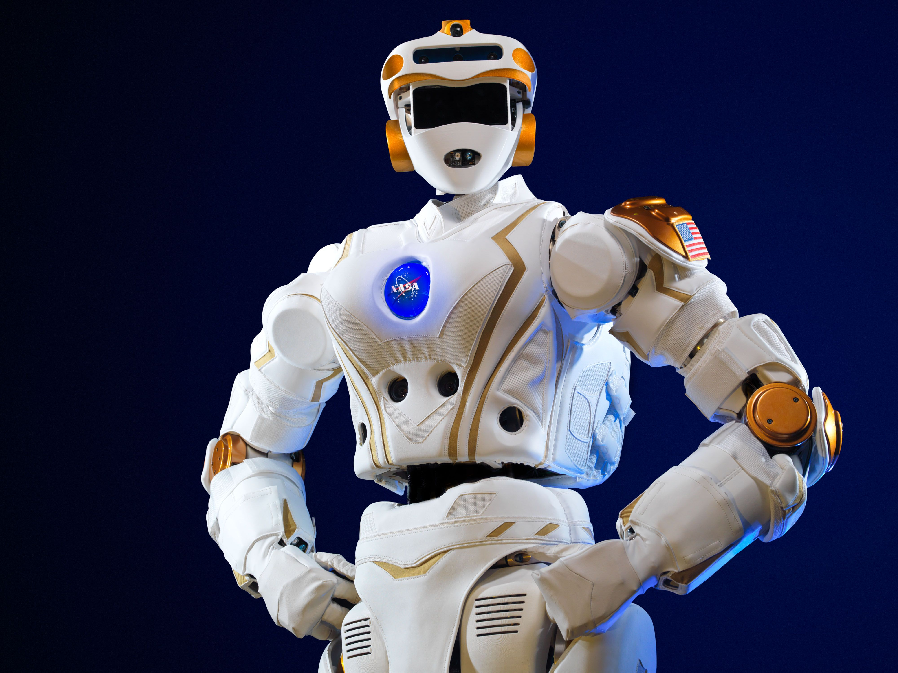
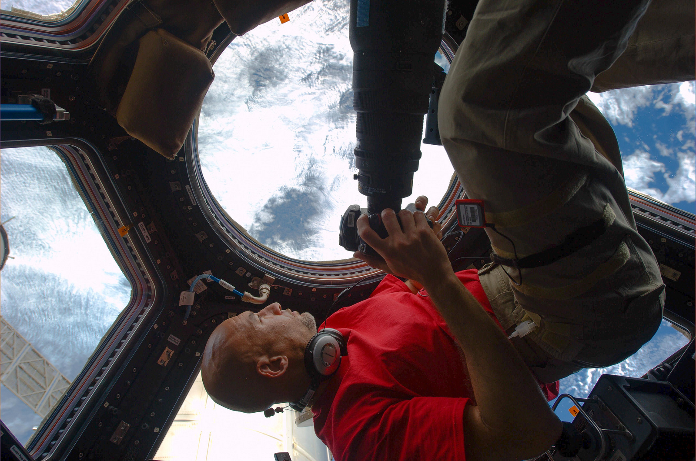
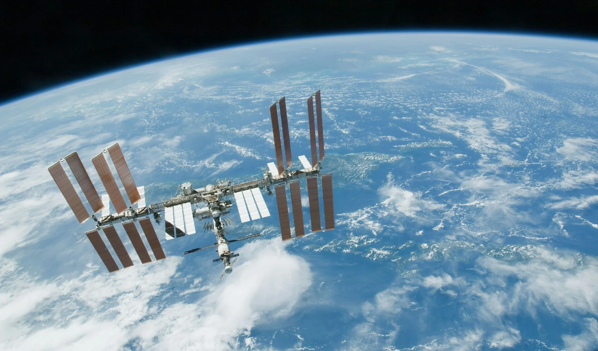
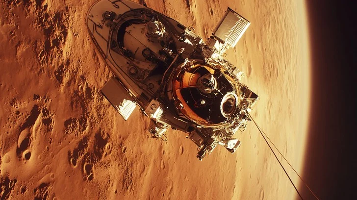
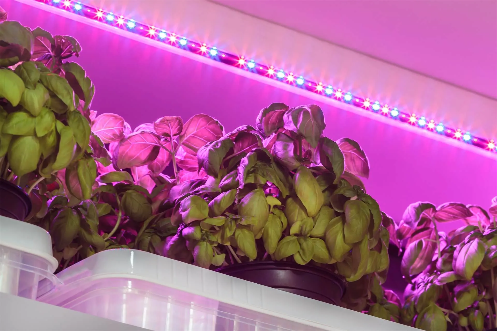
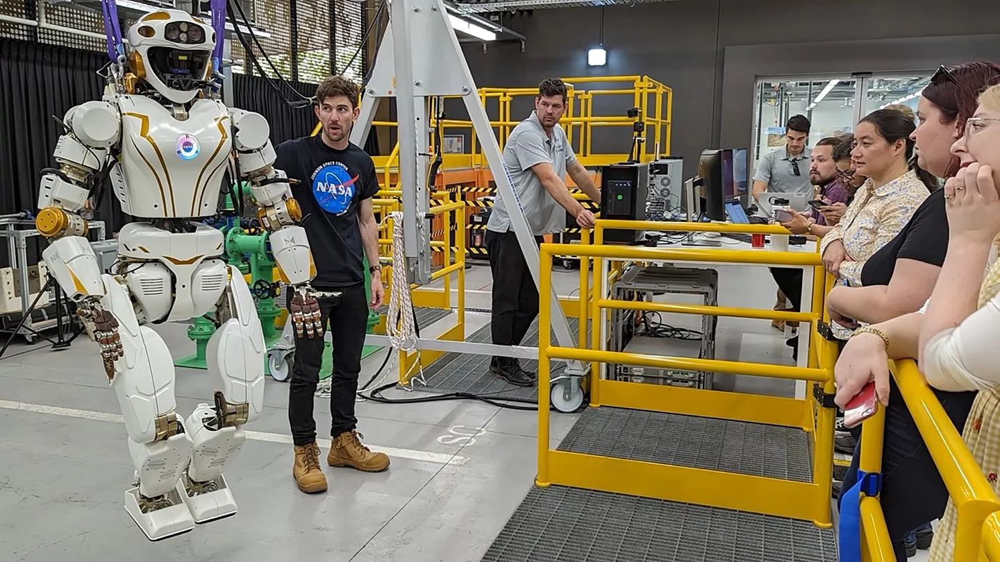

For the first time in history, humanity is preparing to live beyond Earth. What once belonged to science fiction is now a serious scientific goal—building habitats on other worlds, growing food in space, and adapting the human body to alien environments. Surviving beyond Earth is not just about rockets and technology; it is about biology, psychology, engineering, and the future of our species.
To make this possible, researchers are already testing these ideas in real-world simulations. Experiments on the International Space Station study how plants grow in microgravity, how radiation affects human cells, and how isolation impacts mental health. On Earth, scientists use harsh environments like deserts and Antarctica to simulate life on Mars. These studies are crucial because they turn survival in space from a concept into a tested plan, bringing humanity one step closer to becoming truly spacefaring.

“Every planet in the Solar System tells a different story.”





Earth is the only known planet that supports life, yet it is fragile. Climate change, resource limits, and natural disasters remind us that relying on a single planet is risky. Exploring life beyond Earth is not about abandoning our home, but about ensuring the long-term survival of humanity and expanding human knowledge.
By studying other planets, humans also gain a deeper understanding of Earth itself. Observing Mars’ lost atmosphere or Venus’ runaway greenhouse effect helps scientists see what can happen when planetary systems change. Space exploration becomes a mirror, reflecting both the dangers and possibilities facing our own world. In this way, reaching beyond Earth is not an escape plan, but a lesson—one that teaches us how to protect our planet while preparing for a future among the stars.
Although Earth is currently the only known planet that supports life, scientific research shows it is far from indestructible. Studies by NASA and the Intergovernmental Panel on Climate Change (IPCC) confirm that climate change is increasing global temperatures, intensifying natural disasters, and threatening ecosystems essential for human survival. In addition, Earth has a long history of mass extinctions caused by asteroid impacts, volcanic activity, and rapid climate shifts (NASA Planetary Defense Coordination Office). These findings highlight a critical reality: depending on a single planet makes humanity vulnerable to both natural and human-made threats.
Exploring space is not about escaping Earth—it is about protecting humanity’s future. Scientists such as Stephen Hawking argued that becoming a multi-planetary species could help safeguard human civilization from global catastrophes. Research by NASA and ESA shows that studying Mars, the Moon, and asteroids can lead to breakthroughs in life-support systems, sustainable energy, and resource utilization, such as extracting water from lunar ice (NASA Artemis Science Team). These technologies could provide backup habitats, emergency resources, and long-term resilience for humanity, ensuring survival even if Earth faces severe challenges.
Space exploration also deepens understanding of our own planet. Satellites operated by NASA, ESA, and JAXA monitor climate change, deforestation, sea-level rise, and atmospheric composition with unprecedented accuracy. Discoveries of exoplanets by missions like Kepler and James Webb Space Telescope help scientists understand how planetary systems form and what conditions allow life to exist (NASA Exoplanet Exploration Program). By studying space, humanity gains knowledge that improves life on Earth while preparing for the future. Leaving Earth, therefore, is not an act of abandonment—but a step toward responsibility, survival, and continued discovery.
Mars is the most realistic candidate for human settlement due to its proximity and resources. It has water ice, a day length similar to Earth, and geological features that suggest it once supported liquid water. However, Mars has a thin atmosphere, intense radiation, and extreme cold, meaning humans would need sealed habitats, advanced life-support systems, and constant protection to survive.
To overcome these challenges, future Mars missions focus on self-sufficiency. Astronauts would rely on technologies that turn local resources into essentials, such as producing oxygen from the Martian atmosphere and extracting water from ice beneath the surface. Building habitats underground or covering them with Martian soil could shield crews from radiation and temperature swings. Living on Mars wouldn’t be easy—but mastering these systems would prove that humans can adapt to even the harshest worlds.

Future Mars missions depend on In-Situ Resource Utilization (ISRU)—the ability to use local Martian materials instead of bringing everything from Earth. In 2021, NASA’s Perseverance rover successfully tested MOXIE (Mars Oxygen In-Situ Resource Utilization Experiment), which produced oxygen from Mars’s carbon-dioxide-rich atmosphere (NASA Jet Propulsion Laboratory). This experiment proved that breathable oxygen and rocket fuel oxidizer could be generated directly on Mars. Scientists are also studying methods to extract water from subsurface ice, detected by missions such as Mars Reconnaissance Orbiter (NASA Mars Exploration Program). These technologies are essential for long-term survival and return missions.
Mars lacks a strong magnetic field and thick atmosphere, exposing astronauts to dangerous levels of cosmic and solar radiation. Research by NASA’s Human Research Program shows that long-term exposure to radiation increases cancer risks and damages the nervous system. To reduce these risks, scientists propose building habitats underground, inside lava tubes, or covering structures with regolith (Martian soil) to act as natural shielding (European Space Agency – Mars Exploration Studies). These designs also help stabilize temperatures, which can swing from –125°C at night to 20°C during the day, creating safer living conditions for human crews.
Living on Mars would push human adaptability to its limits. Studies aboard the International Space Station have already shown how isolation, confined environments, and microgravity affect mental and physical health (NASA Twin Study). Applying this research to Mars helps scientists design better life-support systems, habitats, and psychological support strategies. Mastering survival on Mars would represent more than exploration—it would prove that humans can adapt to extreme environments using science, cooperation, and innovation. Success on Mars would mark a critical step toward becoming a multi-planetary species capable of surviving beyond Earth.
.jpg)
Living in space requires environments that mimic Earth. Future habitats may rotate to create artificial gravity, helping prevent muscle and bone loss. Space stations and orbiting colonies could become long-term homes for astronauts, designed to support daily life, work, and mental well-being.
Beyond physical health, space habitats must also support astronauts’ mental and emotional well-being. Living in enclosed environments for long periods can cause stress and isolation, so future habitats may include green spaces, natural lighting systems, and flexible living areas that feel more like Earth. By designing habitats that balance technology with human comfort, long-term life in space becomes not only possible, but sustainable.
As human ambitions in space expanded beyond short missions and low Earth orbit, scientists began rethinking how space habitats should be designed for permanent living. Traditional space stations like Mir and the International Space Station were engineered primarily for research, not for sustaining large populations over generations. Future space habitats, however, must function as complete living environments. One proposed solution is the use of rotating structures to generate artificial gravity through centrifugal force. Concepts such as NASA’s Stanford Torus and O’Neill Cylinders envision massive rotating habitats where gravity-like conditions allow humans to live, walk, and work in ways similar to Earth. These designs mark a shift from temporary orbital shelters to fully functional space settlements.
Artificial gravity is not merely a comfort feature; it is a foundational element in long-term habitat planning. By rotating a space habitat at a controlled speed, centrifugal force can simulate gravity, reducing reliance on complex medical countermeasures. This approach allows architects and engineers to design living spaces with familiar orientations—floors, ceilings, and vertical structures—making daily life more intuitive. Artificial gravity also enables the use of conventional furniture, tools, and infrastructure, simplifying construction and maintenance. Research suggests that even partial gravity environments could significantly improve human performance, making rotating habitats a practical and scalable solution for future space communities.
Long-term space habitats must support not only physical survival but also psychological and social well-being. Future designs emphasize open spaces, natural lighting simulations, green areas, and modular living zones to reduce isolation and stress. Rotating habitats could include agricultural sections, residential districts, laboratories, and recreational areas, creating a balanced ecosystem rather than a purely industrial environment. These habitats are envisioned as self-sustaining systems, recycling air, water, and waste while producing food through advanced hydroponic and bioregenerative systems. In this way, space habitats evolve from engineering experiments into living cities, capable of supporting families, workers, and researchers over extended periods.
Food is one of the biggest challenges beyond Earth. Scientists are already experimenting with growing plants in microgravity and Mars-like soil. Future space farms may rely on hydroponics, recycled water, and LED lighting to produce fresh food while reducing dependence on Earth.
Growing food in space is also about independence and survival over time. Fresh plants provide not only nutrition but also oxygen and psychological comfort for astronauts living far from Earth. By mastering closed-loop farming systems—where waste is recycled into nutrients—space missions can become more sustainable and less reliant on constant resupply. These advances won’t just support life in space; they could also inspire smarter, more efficient farming solutions back on Earth.

Growing food in space is essential for long-term human missions. Since 2014, astronauts aboard the International Space Station (ISS) have successfully grown crops using NASA’s Veggie and Advanced Plant Habitat systems (NASA Kennedy Space Center). Plants such as lettuce, radishes, wheat, and chili peppers have been grown and safely consumed by astronauts. These experiments study how microgravity affects plant growth, root orientation, and nutrient uptake, proving that plants can survive and reproduce beyond Earth.
Scientists are also testing how plants grow in environments similar to Mars. Research conducted by NASA, ESA, and universities has used Martian regolith simulants, created from volcanic soil on Earth, to study crop growth (NASA Exobiology Program). While real Martian soil contains toxic perchlorates, experiments show that with proper treatment and nutrient supplementation, plants can grow in regolith-like material. These studies help scientists understand how future Mars habitats could support agriculture using local resources instead of transporting soil from Earth.
Future space farms will rely on closed-loop systems to maximize efficiency. Hydroponics and aeroponics allow plants to grow without soil, using nutrient-rich water mist while reducing water usage by up to 90% compared to traditional farming (European Space Agency – MELiSSA Program). Energy-efficient LED lighting tuned to specific wavelengths optimizes photosynthesis while conserving power. Combined with water recycling and carbon dioxide reuse, these systems could create sustainable food production in space, supporting long-duration missions and reducing dependence on Earth-based resupply.

Robots will play a major role in preparing planets for humans. AI-controlled machines can build habitats, mine resources, and explore dangerous environments before humans arrive. In space, robots are not replacements—they are survival partners.
Robots and AI will also support astronauts during long-term missions by managing daily operations and monitoring critical systems. Intelligent assistants can track astronauts’ health, predict equipment failures, and make real-time decisions when communication with Earth is delayed. By working alongside humans, AI reduces risk, increases efficiency, and allows astronauts to focus on exploration and discovery rather than survival tasks.
Before humans can safely arrive on other planets, robotic systems will act as the first explorers and builders. Autonomous rovers and landers are already mapping terrain, analyzing soil composition, and identifying potential resources such as water ice. Future robotic missions will go far beyond exploration, focusing on site preparation for human habitats. AI-controlled machines could level terrain, assemble structures, and deploy life-support infrastructure long before the first astronauts arrive. By operating in extreme environments where radiation, temperature, and terrain pose serious risks, robots reduce danger to human crews and extend the reach of exploration.
Artificial intelligence enables robots to make decisions independently when communication delays make real-time human control impossible. On planets like Mars, where signals can take up to twenty minutes to reach Earth, robots must assess situations, adapt to unexpected conditions, and solve problems without immediate instructions. AI-driven construction systems could use local materials to build habitats, roads, and radiation shielding, a process known as in-situ resource utilization. This reduces the need to transport heavy equipment from Earth and allows space missions to become more sustainable and cost-effective. Through learning algorithms, robotic systems can improve efficiency over time, optimizing construction techniques in unfamiliar environments.
Rather than replacing human workers, robots are designed to collaborate with astronauts in ways that enhance safety and productivity. Robotic arms, mobile assistants, and autonomous maintenance systems can perform repetitive or hazardous tasks, allowing humans to focus on scientific research, decision-making, and problem-solving. AI systems can monitor life-support systems, detect anomalies, and provide real-time recommendations, acting as an intelligent support layer for human crews. This partnership creates a hybrid workforce in space, where human creativity and judgment are amplified by machine precision and endurance.
As missions extend from months to years, robots will also play a role in maintaining long-term stability and resilience. Autonomous systems can operate continuously without fatigue, conducting inspections, repairs, and environmental monitoring around the clock. Over time, AI companions may assist with scheduling, navigation, and emergency response, helping crews manage complex habitats efficiently. In this role, robots evolve from simple tools into integrated partners within space communities. Their presence allows humanity to expand beyond Earth with greater confidence, transforming exploration into sustainable settlement supported by intelligent machines.